Figure 2.1: Un groupe de Lie
Les groupes de Lie et les espaces homogènes fournissent une multitude d’exemples particulièrement simples de variétés différentiables et c’est une des raisons pour lesquelles nous leur consacrons une section de cet ouvrage. Une autre raison importante est que les groupes de Lie vont être utilisés comme “outils” dans les chapitres suivants.
Chacun est censé être déjà familier avec la notion de structure de groupe. L’introduction aux groupes et leur utilisation dans toutes les branches de la physique est un thème présenté et étudié, suivant les années et les réformes de l’enseignement secondaire, entre la classe de quatrième et les années de Licence... Rappelons donc qu’un groupe est un ensemble (fini ou infini) muni d’une loi de composition interne associative, possédant un élément neutre, et tel que tout élément possède un symétrique pour la loi en question. Du point de vue du calcul, notons que, dans un groupe, il est toujours possible de résoudre une équation du premier degré (du type ax = b, la solution étant x = a−1b). Les exemples les plus simples habituellement présentés aux élèves de nos lycées sont les suivants : Le groupe (ℤ, +) des entiers relatifs, les groupes (additif et multiplicatif) de nombres rationnels (Q, +) et (Q −{0},×) ainsi que leurs généralisations réelles et complexes, les groupes de congruence ℤp = ℤ∕pℤ, les groupes de symétrie des solides platoniques, les groupes de transformations linéaires, affines ou projectives et les groupes de substitutions. Les groupes ne sont pas nécessairement commutatifs, comme les derniers exemples le montrent clairement. Les groupes peuvent être finis (comme ℤ∕pℤ), infinis mais discrets (comme ℤ) ou infinis et “continus” (comme ℝ ou comme le groupe U(1) des rotations autour d’un axe). Regardons ce dernier exemple d’un peu plus près. Toute rotation autour d’un axe est parfaitement caractérisée par un angle θ compris entre 0 et 2π ; de surcroît, les rotations d’angle 0 et 2π sont identiques. En d’autres termes, on peut considérer les rotations en question comme les différents points d’un cercle S1 de rayon quelconque, l’élément neutre (c’est à dire la rotation d’angle nul) étant un point marqué de ce cercle S1. Ceci nous fournit un image “visuelle” de ce groupe U(1), image qui peut nous faire oublier momentanément la structure algébrique proprement dite de cet ensemble (un groupe) mais qui attire notre attention sur sa structure topologique ou même différentiable (un cercle). La notion de groupe de Lie généralise ce dernier exemple en juxtaposant de façon axiomatique la structure de groupe et celles de variété.
Par définition, un groupe de Lie G est donc une variété différentiable munie d’une structure de groupe, de façon à ce que les deux structures soient compatibles, c’est à dire de façon à ce que la multiplication 1 et le passage à l’inverse soient des applications différentiables. Notons que la multiplication est une application de G×G dans G alors que le passage à l’inverse est une application de G dans G. Le lecteur pourra visuellement se représenter un groupe de Lie comme un “patatoïde” avec multiplication (entre points) et origine marquée (voir 2.1).
La dimension d’un groupe de Lie est, par définition, sa dimension en tant que variété (nous verrons de nombreux exemples un peu plus loin) ; notons dès à présent que le groupe U(1) présenté plus haut est de dimension 1.
On désigne par M(n, ℂ) l’algèbre (de dimension complexe n2) des matrices carrées d’ordre n à coefficients complexes et par a† l’adjointe d’une matrice a de M(n, ℂ) (si a = (aij), alors a† = (a ji)). L’ensemble précédent n’est certes pas un groupe pour la loi de multiplication des matrices puisqu’il contient de nombreux éléments non inversibles (toutes les matrices de déterminant nul) mais il contient plusieurs sous-ensembles intéressants qui, eux, sont bien des groupes multiplicatifs, comme on pourra le vérifier aisément.
Notons que les éléments de U(n) ont automatiquement un déterminant (un nombre complexe) de module 1, puisque deta† = deta = 1∕deta, mais pas nécessairement égal à 1.
Les groupes précédents sont définis comme groupes de matrices ; les entrées de ces matrices (les “éléments de matrice”) sont des nombres qui peuvent être réels mais sont généralement complexes. Si on impose à ces éléments de matrice d’être réels, on obtient de nouveaux groupes. Soit M(n, ℝ) l’algèbre (de dimension réelle n2) des matrices carrées d’ordre n à coefficients réels. Cet ensemble, comme M(n, ℂ) est une algèbre associative mais n’est pas un groupe multiplicatif. On définit
Les éléments du groupe unitaire ayant un déterminant de module 1, ceux de O(n, ℝ) auront un déterminant égal à −1 ou à 1 ; ceux pour lesquels il est précisément égal à 1 constituent le groupe SO(n, ℝ). On désigne par 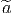 la transposée d’une matrice a de M(n, ℝ).
Une algèbre de Lie g sur un corps commutatif K est un ensemble qui est, d’une part un espace vectoriel sur K (sa loi de groupe abélien est notée + et sa loi externe sur K est notée multiplicativement), de dimension finie ou non, et qui, d’autre part, est muni d’une loi de composition interne –non associative– généralement notée [,] vérifiant les propriétés suivantes
On suppose également vérifiée la linéarité par rapport aux scalaires, c’est à dire [αX,Y ] = [X,αY ] = α[X,Y ] si α ∈ K. La loi [,] est généralement désignée sous le nom de “crochet de Lie”. Dans toute la suite, le corps K coïncidera avec le corps ℂ des nombres complexes.
Soit A une algèbre associative ; on peut lui associer canoniquement une algèbre de Lie en définissant le crochet de Lie de la façon suivante (auquel cas le crochet de Lie peut également être désigné sous le nom de commutateur) :
![X, Y ∈ A → [X, Y ] = XY − Y X](source203x.png)
Supposons que g, en tant qu’espace vectoriel sur le corps des complexes ℂ soit de dimension finie n et soit {Xα}α∈{1…n} une base de g. Le crochet de Lie [Xα,Xβ] de deux vecteurs de base est a priori un élément de g et peut donc se développer sur la base choisie :
On désigne par exp : α →∑ p=0∞αp∕p! l’application exponentielle définie sur M(n, ℂ). Posons g = eA. Il est facile de voir que
△ ATTENTION : On n’a pas dit que tout élément de GL(n, ℂ) pouvait être atteint par la fonction exp (c’est faux !).
Soit G un groupe de Lie défini comme sous-ensemble de M(n, ℂ). On définit son algèbre de Lie notée g ou LieG comme suit,
La définition ci-dessus de l’algèbre de Lie d’un groupe G semble un peu restrictive en ce sens qu’elle semble ne pouvoir s’appliquer qu’aux groupes de matrices, mais il existe une définition plus abstraite de la notion d’algèbre de Lie d’un groupe de Lie, définition ne faisant pas l’hypothèse d’une réalisation matricielle ; nous y reviendrons plus loin.
Soient g et h deux éléments de G et supposons qu’on puisse écrire g = etA et h = etB avec A,B ∈ g. Tout d’abord, notons que g−1 = e−tA. On peut alors considérer le commutateur de g et h au sens de la théorie des groupes, c’est à dire l’élément c = ghg−1h−1 de G. Au second ordre en t, il vient
![tA tB −tA − tB
c = e e e e
= (1 + tA + t2A2∕2! + ...)(1 + tB + t2B2 ∕2! + ...)
(1 − tA + t2A2∕2! + ...)(1 − tB + t2B2 ∕2! + ...)
2 3
= 1 + 0t + t[A, B ] + O (t)](source207x.png)
 1 + t2[A,B]). De plus, on peut démontrer
que
1 + t2[A,B]). De plus, on peut démontrer
que
Soit g ∈ G et supposons qu’on puisse écrire g = eA ; alors, en utilisant la structure d’espace vectoriel de LieG, on voit qu’on peut décomposer A sur une base {Xα} ;ainsi, A = ∑ aαX α. Les n nombres aα permettent donc de définir sur G un système de coordonnées (une carte). Ceci montre également que la dimension de G, en tant que variété, est égale à celle de LieG, considéré comme espace vectoriel.
Notons d’abord que, pour les groupes unitaires,

Nous avons déjà rencontré la relation deteA = eTrA ; il s’ensuit que, si le déterminant de g = eA est égal à 1, la trace de A est nulle. Ainsi,
![eA ∈ SU (n) ⇐⇒ [A + A † = 0 et T rA = 0]](source211x.png)
![eA ∈ O (n) ⇐ ⇒ [eAeAt = 1 et A r´eel] ⇐ ⇒ [A + At = 0 et A r´eel]](source212x.png)
Pour calculer la dimension des groupes de Lie, le plus simple est en général de calculer la dimension des algèbres de Lie correspondantes. Voici un exemple que lecteur pourra généraliser sans peine : “Fabriquons” une matrice carrée antihermitienne. Une matrice n × n dépend, a priori, de n2 paramètres complexes ; nous enlevons d’abord la diagonale (donc il reste n2 − n paramètres), puis nous fabriquons une matrice triangulaire inférieure stricte (donc (n2 − n)∕2 paramètres) ; la partie triangulaire supérieure est alors complètement déterminée par la condition d’anti-hermiticité ; finalement, cette même condition implique que les éléments diagonaux sont imaginaires purs : il nous faut donc rajouter n paramètres réels. Au total, on a donc 2(n2 − n)∕2 + n = n2paramètres réels. Ainsi donc dimRU(n) = dimRLieU(n) = n2.
Le lecteur pourra sans doute ainsi retrouver sans difficulté la dimension des algèbres de Lie suivantes. Remarque : La notation Sp(n) utilisée ci-dessous désigne le groupe unitaire-quaternionique (voir “remarques diverses” en fin de section 2 concernant les groupes symplectiques) ; les matrices de l’algèbre de Lie correspondante sont du type 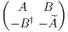 avec A† = −A et 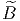 = B.
| G | LieG | dimℝG |
| GL(n, ℂ) | M(n, ℂ) | 2n2 |
| GL(n, ℝ) | M(n, ℝ) | n2 |
| U(n) | Matrices anti-hermitiennes | n2 |
| SU(n) | Matrices anti-hermitiennes de trace nulle | n2 − 1 |
| SO(n) | Matrices antisymétriques réelles | 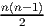 |
| Sp(n) | Voir ci-dessus | 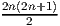 |
Remarques
Même si G est connexe, l’application exp n’est pas nécessairement surjective. Par contre, on démontre que si G est compact et connexe, cette application est surjective (c’est le cas de U(n), SU(n), SO(n) et Sp(n)). Si G est connexe mais non compact, on démontre que exp est “presque” surjective, en ce sens que

Nous avons déjà vu (dans le cas du groupe orthogonal O(n)) que les éléments d’un groupe n’appartenant pas à la composante connexe de l’identité ne pouvaient pas être atteints par la fonction exponentielle. Pour cette raison, nous supposerons que tous les groupes de Lie considérés dans la présente sous-section sont connexes (cas de SO(n)). Nous nous intéressons en effet ici à des phénomènes plus fins que la connexité.


![exp[(θ + 2π)X3 ] = − exp[θX3 ]
exp[(θ + 4π)X3 ] = + exp[θX3 ]](source221x.png)

![[Xi, Xj] = − ϵijkXk](source223x.png)
![exp [θX3 ] = diag(cosθ, cosθ,1) + X3 sin θ ∈ SO (3)](source224x.png)
Expérience utilisant SO(3) : Prenez un objet quelconque, posez-le sur la table et faites-lui subir une rotation de 360 degrés autour d’un axe vertical ; la configuration que vous obtenez est indiscernable de la configuration initiale.
Expérience utilisant SU(2) : Prenez un objet quelconque, suspendez-le au milieu de la pièce en utilisant huit élastiques reliés aux huit coins (haut et bas) de la pièce (vous pouvez utiliser un moins grand nombre d’élastiques !) et faites subir à votre objet une rotation de 360 degrés ; notez que les élastiques sont emmêlés ; essayez de démêler les élastiques sans faire tourner l’objet… vous n’y parvenez pas. Faites alors subir à votre objet une seconde rotation de 360∘ (depuis la configuration initiale vous aurez ainsi effectué une rotation de 4π = 720∘) ; les élastiques semblent être encore plus emmêlés ; essayez de démêler ces élastiques (retrouver la configuration initiale) sans faire tourner l’objet… A votre grande surprise (même si vous avez fait cette expérience plusieurs fois) vous y parvenez !
Remarque : Si vous avez vraiment des difficultés à démêler les élastiques, ouvrez l’ouvrage [5] où la suite des mouvements à effectuer est décrite en détails.
Il existe une autre expérience, encore plus simple, mais un peu plus difficile à décrire “avec des mots”, qui illustre la même différence de comportement entre les deux groupes et qui illustre donc la façon dont SU(2) décrit les “rotations d’objets attachés à leur environnement”. Prenez un verre (rempli de votre vin favori) et essayez, par pivot du poignet, de lui faire subir une rotation de 360∘… échec : à moins d’avoir des articulations très spéciales, vous vous retrouvez tout tordu. Essayez alors, à partir de cette position (tordue) de faire subir à votre verre une seconde rotation, dans le même sens, de 360∘ (le coude doit normalement s’abaisser) et ça marche : Vous vous retrouvez dans l’état initial !
Ce phénomène amusant est d’une importance physique capitale. C’est lui qui, en définitive, explique la différence entre fermions et bosons (rappelons que les électrons — et plus généralement les particules de spin demi-entier — obéissent à la statistique de Fermi-Dirac alors que les photons (ou les noyaux d’Hélium !) — et plus généralement les particules de spin entier — obéissent à la statistique de Bose-Einstein.
On admettra le résultat suivant. Deux groupes compacts connexes non isomorphes peuvent admettre des algèbres de Lie isomorphes (on dit qu’il s’agit de groupes localement isomorphes). Les groupes de Lie qui admettent la même algèbre de Lie g sont tous de la forme Gi = G∕Di où Di est un sous-groupe discret distingué de G. Le sous-groupe Di est isomorphe au groupe fondamental de Gi (i.e. au premier groupe d’homotopie π1(Gi)) et le groupe G est simplement connexe (ce qui signifie que son sous-groupe fondamental est réduit à l’identité). G et est appelé revêtement universel de Gi. On note quelquefois G = 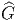i
| SU(2) et SO(3) = SU(2)∕ℤ2 | π1(SU(2)) = 1 | π1(SO(3)) = ℤ2 |
| SU(3) et SU(3)∕ℤ3 | π1(SU(3)) = 1 | π1(SU(3)∕ℤ3) = ℤ3 |
| ℝ et U(1) = ℝ∕ℤ | π1(ℝ) = 1 | π1(U(1)) = ℤ |
 de SO(n) se note Spin(n). Le fait que Spin(3) =
SU(2) est une coïncidence de basse dimension ; on montre que
Spin(4) = SU(2) ×SU(2), Spin(5) = U(2, ℍ) ≡ Sp(2) ≡ USp(4),
Spin(6) = SU(4).
de SO(n) se note Spin(n). Le fait que Spin(3) =
SU(2) est une coïncidence de basse dimension ; on montre que
Spin(4) = SU(2) ×SU(2), Spin(5) = U(2, ℍ) ≡ Sp(2) ≡ USp(4),
Spin(6) = SU(4).
On a bien entendu une terminologie analogue au niveau des groupes.
 ,
,
 et 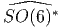 sont non compacts. L’algèbre de Lie réelle unique
dont l’exponentielle constitue un groupe de Lie compact s’appelle
forme réelle compacte de l’algèbre de Lie complexe donnée (bien que,
stricto sensu cette algèbre possède évidemment une topologie non
compacte puisqu’il s’agit d’un espace vectoriel !).
et 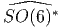 sont non compacts. L’algèbre de Lie réelle unique
dont l’exponentielle constitue un groupe de Lie compact s’appelle
forme réelle compacte de l’algèbre de Lie complexe donnée (bien que,
stricto sensu cette algèbre possède évidemment une topologie non
compacte puisqu’il s’agit d’un espace vectoriel !).
 , on associe
alors une famille de groupes de Lie Gi connexes, mais non simplement
connexes en quotientant
, on associe
alors une famille de groupes de Lie Gi connexes, mais non simplement
connexes en quotientant  par un sous-groupe distingué discret Ki
(voir la sous-section précédente) : Gi =
par un sous-groupe distingué discret Ki
(voir la sous-section précédente) : Gi =  ∕Ki. On a π1(Gi) = Ki et
∕Ki. On a π1(Gi) = Ki et
 est le revêtement universel des Gi. Par exemple, on obtient ainsi
SO(6) =
est le revêtement universel des Gi. Par exemple, on obtient ainsi
SO(6) =  ∕ℤ2 (rappelons la notation consacrée : Spin(n) =
∕ℤ2 (rappelons la notation consacrée : Spin(n) =
 ).
).

Au niveau des groupes compacts correspondants, on obtient donc les isomorphismes

Citons enfin quelques isomorphismes concernant les groupes non compacts. Spin↑(p,q) désigne ici la composante connexe de l’identité dans Spin(p,q) :


Un tout dernier mot : passer en revue “l’essentiel” de la théorie des groupes de Lie en une seule section – même en se limitant aux généralités et aux problèmes de classification – est certainement une tâche impossible. Un ouvrage entier serait d’ailleurs insuffisant. Nous n’avons fait qu’aborder le sujet. Vouloir dresser la liste de ce qui n’a pas été effleuré serait à la fois inutile et… incomplet ! Voici donc le message le plus important destiné à notre lecteur néophyte : La section qui s’achève ici ne doit pas être considérée comme un résumé, mais comme une invitation au voyage…
L’étude des groupes pour eux-mêmes ne devrait pas nous faire oublier un fait essentiel : un groupe sert surtout à agir sur “quelque chose”. Historiquement, d’ailleurs, on définissait le plus souvent les groupes comme “groupes de transformations”, pour s’apercevoir, après coup, du fait que deux groupes de transformations pouvant sembler très différents de prime abord, ne constituaient, en fait, qu’un seul et même groupe “abstrait”, agissant de deux façons différentes sur deux espaces différents. Pour préciser cette notion d’action ainsi que pour décrire la façon dont un groupe G agit sur un ensemble M, il est utile d’introduire un vocabulaire approprié.
A tout élément g de G et à tout élément x (on dira “point”) de E, on associe un point y de E qu’on appelera image de x par la transformation g. On écrira

Pour définir une action quelconque, nous avons simplement supposé que Lg était une bijection, mais on peut contraindre davantage la situation en imposant à Lg d’être un homéomorphisme (E étant alors supposé muni d’une topologie), un difféomorphisme (E étant une variété différentiable), etc . On parle alors d’action continue, différentiable, etc .
On dit que G agit à droite sur E si on se donne un anti-homomorphisme R de G dans l’ensemble des substitutions de E. En d’autres termes, on remplace la condition Lg1g2 = Lg1Lg2 par la condition Rg1g2 = Rg2Rg1. Une action à droite n’est donc pas une action, au sens strict du terme, mais une anti-action. De façon à pouvoir se débarrasser du symbole R, mis pour Right, on notera y = xg au lieu de y = Rg(x). L’écriture de g, à droite de x permet de composer correctement les transformations sans qu’il y ait besoin de parenthèses : Rg1g2(x) = Rg2Rg1(x) implique en effet x(g1g2) = (xg1)g2.
Supposons donnée une action à droite R de G sur E ; on peut canoniquement lui associer une action à gauche L en définissant Lgx = Rg−1x ; c’est à dire encore, avec des notations plus dépouillées, gx = xg−1. On peut ainsi toujours passer de la droite à la gauche et inversement. Cela dit, il est, quelquefois, dangereux d’effectuer ce passage sans notations protectrices… En effet, prenons par exemple E = G lui-même ; on n’a alors certainement pas g.k = k.g−1 dans le groupe G ! Une telle expression devrait donc s’écrire g × k = k.g−1 et s’interpréterait, non comme une égalité dans G mais comme une expression définissant, à partir de la multiplication “.” une nouvelle multiplication “×” (qu’on appelle dailleurs la “multiplication opposée”).


L’action de G sur E est dite transitive s’il n’existe qu’une seule orbite, en d’autres termes, s’il est possible de passer de n’importe quel point de E à n’importe quel autre point à l’aide d’un élément de G.

Dans toute cette sous-section on considère un groupe G agissant sur E de façon fidèle.
Afin de se familiariser avec les concepts qui précèdent ainsi qu’avec la terminologie correspondante, nous suggérons très fortement au lecteur de revoir toute la géométrie élémentaire (celle étudiée dans les classes secondaires) en ces termes, c’est à dire en utilisant l’action des groupes de translations, rotations, homothéties, etc . Il pourra être également extrêmement utile de revoir la cinématique classique (puis la cinématique relativiste) sous cet angle, en étudiant l’action du groupe Euclidien, celle du groupe de Galilée, du groupe de Lorentz etc .

Attention : Une action à gauche fournit une application notée Lg quand on
gèle l’élément g du groupe mais fournit une application notée
RP quand on gèle le point P. L’application Lg n’est autre que
celle qui nous a permis précédemment de définir l’action d’un
groupe sur un ensemble. Notons que Lg = L(g,⋅). C’est en fait
surtout le point de vue 2 qui nous intéresse ici et nous allons donc
étudier l’application RP = L(⋅,P). L’application RP étant supposée
différentiable, nous pouvons considérer sa différentielle notée suivant les
auteurs, RP ∗, TRP ou simplement dRP . Comme on le sait (voir la
première partie de cet ouvrage), dRP est une application linéaire
de l’espace tangent T(G,g) dans l’espace tangent T(M,gP) dont
l’expression, relativement à un couple de repères mobiles dans G et M
s’écrit à l’aide de la matrice jacobienne. Si on choisit alors g = e
(l’élément neutre de G), on obtient ainsi une application linéaire
T(G,e) T(M,P) qu’on devrait noter (dRP )g=e mais que nous
préférons ne pas baptiser du tout. L’important est d’observer qu’on
obtient ainsi, pour tout vecteur X appartenant à T(G,e) un vecteur
noté XL(P) appartenant à T(M,P). Puisque cette application
existe pour tout P de M, on obtient donc un champ de vecteurs
P ∈ M
T(M,P) qu’on devrait noter (dRP )g=e mais que nous
préférons ne pas baptiser du tout. L’important est d’observer qu’on
obtient ainsi, pour tout vecteur X appartenant à T(G,e) un vecteur
noté XL(P) appartenant à T(M,P). Puisque cette application
existe pour tout P de M, on obtient donc un champ de vecteurs
P ∈ M XL(P) ∈ T(M,P). On dit que XL est le champ de vecteurs
fondamental gauche associé à l’élément X de l’espace tangent à G en
l’identité.
XL(P) ∈ T(M,P). On dit que XL est le champ de vecteurs
fondamental gauche associé à l’élément X de l’espace tangent à G en
l’identité.
Le groupe euclidien E(2) agit sur le plan affine M = ℝ2 par composition de translations et de rotations autour de l’origine (c’est un produit semi-direct du groupe des rotations U(1) par le groupe des translations ℝ2). Une carte (qui est d’ailleurs globale) de ℝ2 est définie par les coordonnées (x,y) relatives à un repère du plan. L’action du groupe euclidien s’écrit

![( ′ ′ ′ )
[dLP ]g= (θ,a,b) = ∂x′∕∂θ ∂x ∕′∂a ∂x′∕∂b
∂y ∕∂θ ∂y ∕∂a ∂y ∕∂b](source260x.png)
 . Grâce à l’utilisation de
quelques abus de notations évidents, nous voyons que
. Grâce à l’utilisation de
quelques abus de notations évidents, nous voyons que
Xθ(P) = 
 = 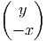 et donc Xθ(P) = x ∂_
∂y − y ∂ _
∂x
= 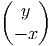 et donc Xθ(P) = x ∂_
∂y − y ∂ _
∂x
Xa(P) =  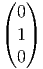 =
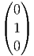 =  et donc Xa(P) = ∂ _
∂x
et donc Xa(P) = ∂ _
∂x
 est
est
Xb(P) =  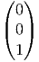 = 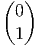 et donc Xa(P) = ∂ _
∂y
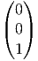 = 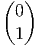 et donc Xa(P) = ∂ _
∂y

![[XL, Y R] = 0](source276x.png)


![[XL, Y L] = − [X, Y ]L](source280x.png)
A titre d’exercice (ou d’illustration), vérifions ces propriétés générales dans le cadre de SL(2, ℂ).
Les générateurs (représentation fondamentale) sont donnés par
| X+ = 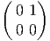 , | X− =  , , | X3 =  |
les actions à droite et à gauche sont données par :
X+ = =  | , |  X+ = X+ =  |
X− = 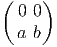 = 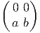 | , |  X− = X− =  |
X3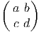 =  | , | 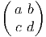X3 =  |
Notez que les générateurs X± et X3 agissent par dérivations. En effet, les actions classiques (droite et gauche) ci-dessus peuvent aussi être écrites à l’aide des opérateurs différentiels suivants :
| X+L = c ∂_ ∂a + d ∂_ ∂b | , | X+R = a ∂_ ∂b + c ∂_ ∂d |
| X−L = a ∂_ ∂c + b ∂_ ∂d | , | X−R = b ∂_ ∂a + d ∂_ ∂c |
| X3L = a ∂_ ∂a + b ∂_ ∂b − c ∂_ ∂c − d ∂_ ∂d | , | X3R = a ∂_ ∂a − b ∂_ ∂b + c ∂_ ∂c − d ∂_ ∂d |
Il est alors facile de vérifier explicitement que, par exemple,
![[X3, X+-] = +2X+,- [XR3 ,XR+] = +2XR+, [XL3,XL+ ] = − 2XR+](source296x.png)
Le groupe G agit sur lui-même par multiplications à droite et à gauche, comme nous l’avons vu plus haut, mais également par l’application adjointe. Soit g un élément de G, on définit :

Nous avons déjà fait agir le groupe euclidien G (éléments g = (θ,a,b)) sur l’espace affine ℝ2. Nous allons maintenant faire agir G sur lui-même, à droite.
Soit P ∈ G. On considère l’application


 ,
Xb(e) =
,
Xb(e) =  .
.
On calcule dRP 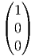 =  , dRP
, dRP  =
=  , dRP 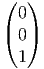 = 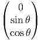 .
, dRP 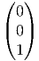 = 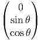 .
La base correspondante de LieG ≡ ΓG(TG) est donc
Nous laissons au lecteur le soin de vérifier les relations de commutation
Le groupe SU(2) est difféomorphe à la sphère S3. Pour le voir, il suffit d’écrire un élément g de SU(2) comme une matrice 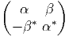 , obéissant à la condition g† = g−1. Alors, detg†g = 1, c’est à dire
Revenons à la sphère S3 qu’on peut donc identifier avec le groupe de Lie SU(2). Posons Xi = i∕2σi, où les σi sont les matrices de Pauli (section 2.2.2). On peut paramétriser un point quelconque g par trois angles d’Euler ψ,θ,ϕ en écrivant


On peut aussi considérer les courbes Gi(t) = Ri(t)g obtenues par translation à gauche. L’expression des champs de vecteurs invariants à droite XiL (et des formes correspondantes XiL) s’exprime à l’aide des formules précédentes en interchangeant simplement partout les coordonnées ϕ et ψ. Les relations de commutation s’écrivent alors
![[XL ,XL ] = +XL etc
1 2 3](source321x.png)
Soit G un groupe de Lie et choisissons une base Xα dans son algèbre de Lie, ensemble que nous identifions, en tant qu’espace vectoriel, avec l’espace tangent T(G,e). Les vecteurs Xα déterminent, comme nous l’avons vu, des champs de vecteurs invariants à gauche Xα(⋅). L’espace de ces champs de vecteurs étant, comme on le sait, de dimension finie et étant lui-même identifiable à l’algèbre de Lie de G, on peut écrire, en tout point P de G,
 = f γ(P )X γ(P)
αβ](source323x.png)
Rappelons que, pour une variété différentiable quelconque, les fonctions de structure d’un repère mobile dépendent généralement du point où elles sont évaluées ; par contre, on voit ici que, lorsque cette variété est un groupe de Lie et que le repère mobile choisi est un champ de vecteurs invariant à gauche, ces fonctions de structure fαβγ sont des constantes de structure : elles ne dépendent que de la base choisie dans T(G,e) et non du point P où elles sont calculées.
En utilisant des champs invariants à droite, on pourrait mener une discussion analogue, c’est à dire, en particulier, associer à toute base {Xα} de T(G,e) un repère mobile global constitué de champs invariants à droite XL(g) = Xg et obtenir des constantes de structure gαβγ = −f αβγ.


Si u ∈ TG, c’est à dire que u est un vecteur en un certain point g, on peut, a priori décomposer u sur une base de champs invariants à gauche au point g : u = uαX α(g). On sait que θ(u) est alors l’élément de l’algèbre de Lie (identifiée ici avec T(G,e)) égal à θ(u) = uαX α(e) = uαX α. Puisque θ = θαX α, on définit dθ = dθαX α (rappelons que Xα ≡ Xα(e)), mais on sait que, pour un repère mobile quelconque (voir chapitre précédent), on a dθα + 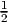fβγαθβθγ = 0 où les fβγα sont les fonctions de structure du repère mobile ; ici les “fonctions de structure” sont les constantes de structure. Pour deux formes ω et σ à valeurs dans une algèbre de Lie (ω = ωαX α et σ = σαX α) on définit le crochet
![α β α β α β γ
[ω ∧ σ ] = [ω Xα ∧ σ Xβ ] = ω ∧ ω [X α,X β] = ω ∧ σ fαβX γ](source328x.png)
 (u,v) =
2ωα(u)ωβ(v)f
αβγX
γ Ainsi [ω ∧ ω](u,v) = 2[ω,ω](u,v) et l’équation
de Maurer-Cartan peut s’écrire également sous la forme
(u,v) =
2ωα(u)ωβ(v)f
αβγX
γ Ainsi [ω ∧ ω](u,v) = 2[ω,ω](u,v) et l’équation
de Maurer-Cartan peut s’écrire également sous la forme
![dθ + [θ,θ] = 0](source332x.png)
![dω − 1-[ω ∧ ω ] = 0
2](source333x.png)
Une représentation L d’un groupe G dans un espace vectoriel E (sur le corps K) est un cas particulier de la notion d’action. L’espace E n’étant pas quelconque mais doté d’une structure d’espace vectoriel, on impose à l’action Lg d’être linéaire. En d’autres termes, à tout élément g de G, on associe un automorphisme Lg de E (une transformation linéaire bijective de E sur lui-même). Si E est de dimension finie p, moyennant un choix de bases, on peut écrire l’automorphisme Lg à l’aide d’une matrice inversible p × p encore désignée par Lg. On peut donc définir une représentation L comme un homomorphisme du groupe G dans le groupe GL(p,K). On dit qu’une représentation est fidèle lorsque l’homomorphisme L ci-dessus est injectif.
La théorie des représentations est un chapitre essentiel de la théorie des groupes et est également d’une importance capitale dans pratiquement toutes les branches de la physique. Les différents aspects de la théorie des représentations ne seront pas étudiés dans cet ouvrage.
Soit G un groupe et H un sous-groupe. On définit la relation d’équivalence g1 ∼ g2 si et seulement si g1 ∈ g2H. L’ensemble des classes d’équivalence, c’est à dire l’ensemble quotient G∕ ∼ se note G∕H. On dit que cet ensemble est un espace homogène pour le groupe G. Le vocable “homogène” vient du fait que les propriétés algébriques de G∕H sont les mêmes en tous ses points puisqu’on peut passer de l’un à l’autre par action de G.
On démontre, lorsque G est topologique, que H doit être fermé pour que le quotient ait une topologie séparée (propriété de Haussdorf). C’est toujours ce que nous supposerons.
Lorsque G est un groupe de Lie et H un sous groupe de Lie, G∕H est une variété différentiable. Les espaces homogènes fournissent donc une quantité d’exemples intéressants de variétés. Ce sont les variétés les plus “simples” qui soient (les groupes de Lie eux-mêmes étant des cas particuliers d’espaces homogènes). Nous aurons de nombreuses fois l’occasion d’y revenir lors de notre étude des espaces fibrés. Attention, une variété donnée peut parfois s’écrire de diverses façons comme espace homogène de groupes de Lie. En d’autres termes, deux quotients G1∕H1 et G2∕H2 peuvent très bien être difféomorphes, même si G1≠G2 (par exemple SU(3)∕SU(2) et SO(6)∕SO(5) sont tous deux difféomorphes à la sphère S5). Ainsi, deux groupes différents peuvent agir transitivement sur le même espace.
Les résultats concernant la théorie des espaces homogènes (en particulier tout ce qui concerne les espaces symétriques) sont d’un usage constant dans de nombreuses branches des mathématiques et de la physique théorique. Là encore, comme pour la théorie des représentations, que nous n’avons fait que mentionner… nous conseillons vivement au lecteur de se cultiver sur le sujet en consultant les ouvrages appropriés.
Bien connaître la structure des algèbres de Clifford est une chose essentielle, aussi bien pour les géomètres que pour les physiciens des particules, ou plus généralement pour les physiciens théoriciens. Cette section est bien trop courte pour couvrir tous leurs aspects. Nous nous contenterons de donner leur définition, de discuter leur structure générale, et de montrer comment se servir de ces algèbres pour obtenir une description explicite des groupes Spin.
L’algèbre de Clifford réelle C(p,q) est l’algèbre associative unitaire engendrée sur ℝ par n = p + q symboles γμ soumis aux relations (γμ)2 = 1 pour μ ∈{1, 2,…,p}, (γν)2 = −1 pour ν ∈{p + 1,p + 2,…,p + q}, et

Il est utile d’introduire une matrice diagonale η = diag(1…1,−1,… − 1) et d’écrire les relations précédentes à l’aide d’un anticommutateur ({,}) sous la forme {γμ,γν,} = 2ημν
Soit E un espace vectoriel de dimension n sur ℝ muni d’un produit scalaire non dégénérée g (la métrique), de signature (p,q). Soit {eμ} une base orthonormée et {eμ} la base duale. On a encore une métrique de composantes gμν sur le dual. On peut associer, à tout vecteur v = vμeμ du dual, un élément Cliff(v) = vμγμ de l’algèbre de Clifford C(p,q). Abus de notations : Nous noterons v = Cliff(v). Les physiciens des particules utilisent en général la notation “slash” de Feynmann. De cette façon nous obtenons la relation uv + vu = 2g(u,v) pour tout couple de vecteurs du dual.
Une base vectorielle de C(p,q) peut être choisie comme suit :
L’adjectif réel est important : Par exemple, en dimension (3, 1), l’élément γ5 = iγ0γ1γ2γ3 n’est pas un élément de C(p,q) mais un élément de l’algèbre complexifiée Cℂ = C(p,q) ⊗ ℂ.
L’algèbre C(p,q) n’est généralement pas isomorphe à C(q,p). Il faut se rappeler que (p,q) = (p+,q−).
Puisque l’algèbre de Clifford C = C(p,q) et l’algèbre extérieure Λ(E) ont même dimension, ils sont isomorphes en tant qu’espaces vectoriels. La correspondance entre les deux lois d’algèbre est la suivante : pour u,v ∈ E∗, on peut directement définir le produit de Clifford uv = u ∧ v + g(u,v).
Soit C0 la partie paire de C, c’est à dire la sous-algèbre linéairement engendrée par les produits d’un nombre pair de générateurs γ.
Soit

Soit Z le centre de C et Z0 le centre de C0.
Le groupe des rotations O(n) possède, comme nous l’avons vu, deux composantes connexes, mais lorsqu’on autorise une signature pseudo-euclidienne (p,q), le groupe des rotations correspondant, noté L = O(p,q) en possède en général quatre.

Aucune des composantes connexes de L n’est simplement connexe. Il est donc naturel de considérer, pour chacun des groupes mentionné leur groupe de recouvrement universel. On note Pin, Spin et Spin↑ les groupes simplement connexes correspondant à O, SO et SO↑.
Le groupe de Clifford Γ est défini comme l’ensemble de tous les éléments s de l’algèbre de Clifford C = C(p,q) qui sont inversibles et satisfont à la propriété :

 vxv−1 est donc l’opposée de la symétrie par rapport à
l’hyperplan conjugué à v. Plus généralement, pour s ∈ Γ, la transformation
vxv−1 est donc l’opposée de la symétrie par rapport à
l’hyperplan conjugué à v. Plus généralement, pour s ∈ Γ, la transformation
L’application χ définit manifestement une représentation du groupe de Clifford, mais cette représentation n’est pas fidèle puisque s et 3s, par exemple, déterminent la même rotation. On va obtenir le groupe Spin à partir du groupe de Clifford en introduisant une condition de normalisation. Notons tout d’abord avec une “barre”, placée au dessus d’un symbole, l’involution principale de C, définie par γμ = γμ, c’est à dire


On peut non seulement décrire le groupe Spin(p,q) comme un sous ensemble de l’algèbre de Clifford C(p,q) mais aussi l’algèbre de Lie correspondante. Soient x,y,z ∈ E, alors [xy,z] ∈ E. En effet, [xy,z] = xyz −zxy = 2(xg(y,z) −g(x,z)y). En développant l’exponentielle, on obtient ainsi exp(txy)zexp(−txy) ∈ E, donc exp(txy) appartient au groupe de Clifford et xy appartient à l’algèbre de Lie du groupe de Clifford. On peut aussi, en développant l’exponentielle, montrer que exp(s) = exp(s).
Ces remarques montrent que l’algèbre de Lie du groupe de Clifford est engendrée par 1 et les produits xy lorsque x,y ∈ E. Cette algèbre de Lie est un peut trop “grosse”, celle de Spin↑ est plus intéressante. En effet, soient x et y deux (co)-vecteurs, alors

Exemple. Prenons (p = 3,q = 1). Le groupe des rotations correspondant est le groupe de Lorentz de la physique relativiste. Soit β un réel quelconque. Alors β 2 γ0γ1 ∈ Lie(Spin↑) et s = exp(β 2 γ0γ1) ∈ Spin↑. Un calcul facile (développer l’exponentielle) montre alors que


Ceci montre donc que la transformation de Lorentz χ(s) est un “boost” (rotation hyperbolique) le long de l’axe des x. Plus généralement, si
 et si
et si

 avec (|n|2 = 1).
Notons pour finir que Spin(p,q) ⊂ C0(p,q) = C0(q,p), mais que C(p,q)≠C(q,p)
en général. L’inclusion est évidente au vu de la définition du groupe Spin. Les
égalités (ou inégalités) entre ces ensembles résultent de l’étude générale qui
suit.
avec (|n|2 = 1).
Notons pour finir que Spin(p,q) ⊂ C0(p,q) = C0(q,p), mais que C(p,q)≠C(q,p)
en général. L’inclusion est évidente au vu de la définition du groupe Spin. Les
égalités (ou inégalités) entre ces ensembles résultent de l’étude générale qui
suit.
Pour voir si C ou C0 sont des algèbres simples, il faut voir si on peut, ou non, fabriquer un projecteur non trivial P (P2 = P) qui commute avec C (ou C0). Un tel projecteur peut, dans certains cas, se fabriquer à l’aide de ϵ.
La discussion est très différente suivant que la dimension n est paire ou impaire (ϵ appartiendra, suivant les cas, au centre de C, ou seulement au centre de C0).
Dans ce cas, l’opérateur d’orientation ϵ commute avec les éléments pairs de C mais anticommute avec les éléments impairs (démonstration immédiate en utilisant les relations de commutation des générateurs γμ). Le centre de C 0 est en fait engendré, dans ce cas par 1 et par ϵ.
La discussion dépend alors du carré de ϵ. Si ϵ2 = 1 on peut fabriquer deux projecteurs PR = 1+ϵ 2 et PL = 1−ϵ 2 permettant de “couper” la sous-algèbre C0 en deux composantes simples (on voit immédiatement que PL2 = P L et PR2 = P R).
La discussion peut se résumer comme suit :
C est une algèbre simple pour n pair.

Remarque : dans le cas de l’algèbre de Dirac (nom donné à l’algèbre de Clifford dans le cas (p = 3,q = 1)), ϵ2 = −1. La sous algèbre paire C 0 est simple. Pour pouvoir la casser en deux, il faut introduire le nombre complexe i et fabriquer un projecteur (1 ± γ5)∕2 à l’aide de γ5 = iϵ, mais… cela ne peut évidemment se faire qu’en autorisant des coefficients complexes, c’est à dire en complexifiant l’algèbre C.
Dans ce cas, l’opérateur d’orientation ϵ commute avec les éléments impairs de C et commute aussi avec les éléments impairs (démonstration immédiate en utilisant les relations de commutation des générateurs γμ). Le centre de C est en fait engendré, dans ce cas par 1 et par ϵ.
La discussion dépend encore alors, comme précédemment du carré de ϵ. Si ϵ2 = 1 on peut fabriquer deux projecteurs 1+ϵ 2 et 1−ϵ 2 permettant de “couper” l’algèbre de Clifford C en deux composantes simples.
La discussion peut se résumer comme suit :
C0 est une algèbre simple.

De plus, C = C0 ⊕ C0ϵ.
La discussion qui précède pourrait laisser croire que la structure des algèbres de Clifford sur ℝ dépend de (p − q) modulo 4. En fait une analyse plus fine montre qu’elle dépend de (p − q) modulo 8. L’idée est la suivante : on commence par étudier explicitement la structure de quelques algèbres de Clifford de basse dimension, puis on construit les autres par produits tensoriels.

Ce théorème permet d’obtenir immédiatement les résultats suivants : Soit E un espace vectoriel de dimension 2. Soit ϵ = γ1γ2 son opérateur d’orientation.


Les théorèmes de périodicité montrent alors que

| p − qmod8 | 0 | 1 | 2 | 3 |
| C(p,q) | M(2n∕2, ℝ) | M(2n−1 2 , ℝ) ⊕ M(2n−1 2 , ℝ) | M(2n∕2, ℝ) | M(2n−1 2 , ℂ) |
| p − qmod8 | 4 | 5 | 6 | 7 |
| C(p,q) | M(2n 2 −1, ℍ) | M(2n−1 2 , ℍ) ⊕ M(2n−1 2 , ℍ) | M(2n 2 −1, ℍ) | M(2n−1 2 , ℂ) |
Le lecteur pourra faire usage des deux tables suivantes (qui se déduisent de la précédente) où on étudie explicitement le cas particulier d’une signature euclidenne (n, 0) ou (0,n) et d’une signature hyperbolique (n− 1, 1) ou (1,n− 1), pour les huit cas n = 4…11.
Cas euclidien (de n = 4 à n = 11).
Pour réduire la taille de la table, on a noté M(d,K) sous la forme (d,K).
| n | Cℂ | C(n, 0) | C(0,n) | C0(n, 0) | θ |
| 4 | (4, ℂ) | (2, ℍ) | (2, ℍ) | ℍ ⊕ ℍ | ϵ |
| 5 | (4, ℂ) ⊕ (4, ℂ) | (2, ℍ) ⊕ (2, ℍ) | (4, ℂ) | (2, ℍ) | |
| 6 | (8, ℂ) | (4, ℍ) | (8, ℝ) | (4, ℂ) | iϵ |
| 7 | (8, ℂ) ⊕ (8, ℂ) | (8, ℂ) | (8, ℝ) ⊕ (8, ℝ) | (8, ℝ) | |
| 8 | (16, ℂ) | (16, ℝ) | (16, ℝ) | (8, ℝ) ⊕ (8, ℝ) | ϵ |
| 9 | (16, ℂ) ⊕ (16, ℂ) | (16, ℝ) ⊕ (16, ℝ) | (16, ℂ) | (16, ℝ) | |
| 10 | (32, ℂ) | (32, ℝ) | (16, ℍ) | (16, ℂ) | iϵ |
| 11 | (32, ℂ) ⊕ (32, ℂ) | (32, ℂ) | (16, ℍ) ⊕ (16, ℍ) | (16, ℍ) | |
Cas hyperbolique (de n = 4 à n = 11).
Pour réduire la taille de la table, on a noté M(d,K) sous la forme (d,K).
| n | Cℂ | C(n − 1, 1) | C(1,n − 1) | C0(n − 1, 1) | θ |
| 4 | (4, ℂ) | (4, ℝ) | (2, ℍ) | (2, ℂ) | iϵ |
| 5 | (4, ℂ) ⊕ (4, ℂ) | (4, ℂ) | (2, ℍ) ⊕ (2, ℍ) | (2, ℍ) | |
| 6 | (8, ℂ) | (4, ℍ) | (4, ℍ) | (2, ℍ) ⊕ (2, ℍ) | ϵ |
| 7 | (8, ℂ) ⊕ (8, ℂ) | (4, ℍ) ⊕ (4, ℍ) | (8, ℂ) | (4, ℍ) | |
| 8 | (16, ℂ) | (8, ℍ) | (16, ℝ) | (8, ℂ) | iϵ |
| 9 | (16, ℂ) ⊕ (16, ℂ) | (16, ℂ) | (16, ℝ) ⊕ (16, ℝ) | (16, ℝ) | |
| 10 | (32, ℂ) | (32, ℝ) | (32, ℝ) | (16, ℝ) ⊕ (16, ℝ) | ϵ |
| 11 | (32, ℂ) ⊕ (32, ℂ) | (32, ℝ) ⊕ (32, ℝ) | (32, ℂ) | (32, ℝ) | |
Remarque : en observant ces tables, on voit que

Ces dernières égalités constituent un cas particulier de la relation générale (conséquence directe des relations de périodicité) :

On sait que le groupe Spin(p,q) est inclus dans la sous-algèbre de Clifford paire C0(p,q). Les tables ci-dessus permettent donc aussi de trouver les inclusions de Spin(p,q) dans les groupes SL(n,K) où K = ℝ, ℂ, ℍ. Dans les cas de plus basse dimension, les inclusions peuvent être des égalités. Par exemple Spin(5) = SL(2, ℍ), Spin(10) ⊂ SL(16, ℂ), Spin(6, 1) ⊂ SL(4, ℍ) etc.
Si on complexifie l’algèbre de Clifford réelle C, c’est à dire si on autorise les scalaires de l’algèbre à appartenir au corps des nombres complexes, on peut alors toujours fabriquer, à l’aide de ϵ, un opérateur de carré un. Cet opérateur est appelé opérateur de chiralité et noté traditionnellement γ5. Si ϵ est déjà de carré égal à 1, il n’y a plus rien à faire et on pose simplement γ5 = ϵ. Sinon, on le multiplie par i et on pose γ5 = iϵ. A l’aide de cet opérateur de carré 1 on peut alors toujours fabriquer 2 projecteurs 1±γ5 2 à l’aide desquels on pourra décomposer C0ℂ en deux composantes simples lorsque n est pair et Cℂ en deux composantes simples lorsque n est impair. La discussion se résume par :
Remarque : Lorsque n est impair, on dit parfois que γ5 n’existe pas… Il faut préciser ce qu’on entend par là : l’opérateur que nous venons de définir et de noter γ5 existe dans tous les cas. Cela dit, dans le cas impair, il ne peut pas servir à décomposer C0ℂ en deux, précisément parce que, dans ce cas C0ℂ est simple ! En d’autre termes, lorsque n est impair, on ne peut pas écrire un spineur de Dirac comme somme de deux spineurs de Weyl (terminologie précisée un peu plus bas).
On dit qu’une représentation d’une K-algèbre associative A sur le K-espace vectoriel V est de type F si l’ensemble des automorphismes de V qui commutent avec l’action de A est égal à F. On démontre que F = GLA(V ) est un corps et que K est un sous-corps de F. Lorsque la représentation est irréductible et K = ℝ, les seules possibilités pour F sont ℝ, ℂ ou ℍ. Les tables qui précèdent illustrent ce phénomène. En effet, lorsqu’on écrit, par exemple C(1, 3) = M(2, ℍ), c’est qu’il existe, entre ces deux objets, un isomorphisme d’algèbre associative réelle. En d’autres termes, il existe une représentation fidèle ρ de la ℝ-algèbre C(1, 3) sur l’espace vectoriel ℍ2 considéré comme espace vectoriel réel de dimension 8. Les générateurs γμ sont alors représentés par des matrices 2 × 2 notées ρ(γμ) à coefficients dans ℍ. Il est évident que si ψ ∈ ℍ2 et si k ∈ ℍ, alors (ρ(γμ)ψ)k = ρ(γμ)(ψk), ce qui montre que le commutant de la représentation ρ est bien égal à ℍ : ρ est de type ℍ. Bien entendu, si on se donne explicitement la représentation ρ par la donnée de matrices ρ(γμ), on peut fabriquer une infinité de représentations équivalentes en changeant simplement de base. Attention, l’algèbre de Clifford C(p,q) est définie par des générateurs γμ particuliers obéissant aux relations de Clifford, alors que ce n’est pas le cas a priori pour une algèbre de matrices donnée. Il est bon de garder à l’esprit la distinction entre ces algèbres de Clifford “abstraites” et les algèbres de matrices qui les représentent fidèlement, algèbres qui sont données par les tables précédentes. On parlera cependant abusivement du type de l’algèbre C(p,q).
Dans le cas n pair, on voit, en consultant la table, que le type est toujours, soit réel, soit quaternionique.
Dans le cas n impair, les trois types peuvent exister mais on peut noter que si C(p,q) est de type complexe, alors C(q,p) est de type réel ou de type quaternionique (on n’a jamais deux types complexes en même temps pour des signatures opposées).
On peut aussi changer de point de vue et partir d’une représentation complexe de l’algèbre de Clifford C(n)ℂ avec n = p + q. On veut alors retrouver les représentations des formes réelles C(p,q) à partir de celle(s) de Cℂ (cette dernière est d’ailleurs unique, à équivalence près, dans le cas pair, puisque l’algèbre est simple). De façon générale, à une forme réelle correspond une involution (une “étoile”) ∗ qui doit satisfaire aux relations ∗(ab) = ∗(b) ∗ (a) et ∗∗ = 1. Les éléments “réels” sont ceux qui sont hermitiens pour cette involution, c’est à dire, qui sont tels que ∗a = a. Ainsi, par exemple M(2, ℍ) est l’ensemble des éléments hermitiens de M(4, ℂ) pour une étoile particulière.
Au niveau de l’espace vectoriel support d’une représentation de l’algèbre complexifiée, l’existence des trois types de représentations est liée à l’existence, ou non, d’un opérateur c, appelé (en physique surtout) un opérateur de conjugaison de charge, qui est défini comme un opérateur antilinéaire de carré ±1, commutant avec les générateurs γμ de Cℂ. En d’autres termes c doit être un Cℂ-isomorphisme de l’espace vectoriel complexe EDirac sur l’espace vectoriel conjugué EDirac (le même espace vectoriel muni de la loi externe conjuguée). Il existe trois cas : Premier cas : c existe et c2 = −1. Dans ce cas le type est quaternionique. L’opérateur c (qui n’est pas unique) correspond à la conjugaison complexe dans le commutant, suivie de la multiplication par un des trois générateurs quaternioniques. Deuxième cas : il n’existe pas de conjugaison de carré −1 mais il existe une conjugaison c de carré 1. Dans ce cas, le type est réel et c correspond à la conjugaison complexe du commutant. Troisième cas : lorsqu’il n’existe pas de conjugaison, le type est complexe.
Si n = p + q est pair, il n’existe qu’une seule représentation de Dirac, puisque Cℂ est simple.
Si n est impair, nous en avons deux, puisque Cℂ est somme de deux algèbres simples, mais ces deux représentations ne sont pas fidèles (la somme des deux l’est).
Dans tous les cas, EDirac = ℂf où f = 2[n∕2], [n∕2] désignant la partie entière de n∕2. Ceci résulte immédiatement du fait que dimC = 2n.

Si n est impair, la restriction de la représentation de Dirac à la sous algèbre C0ℂ reste irréductible puisque C0ℂ est simple. L’opérateur γ5 ne permet pas de décomposer un spineur de Dirac (on a déjà γ5ψ = ±1).
Rappelons que Pin(p,q) et Spin(p,q) (le recouvrement de SO(p,q)) sont respectivement obtenus comme sous-ensembles des algèbres C(p,q) et C0(p,q). Les spineurs de Dirac et de Weyl fournissent également des représentations irréductibles des groupes correspondants.
Etant donné une dimension n et un couple d’entiers (p,q) avec n = p + q, on dit qu’il existe des spineurs de Majorana si l’une des deux algèbres C(p,q) ou C(q,p) est de type réel.
L’existence de spineurs de Majorana se lit sur les tables précédentes :
Dans le cas n pair, on a des spineurs de Majorana lorsque la signature (p,q) est telle que p−q = 0, 2ou6modulo8. Exemple : En dimension 4, lorsque la signature est proprement euclidienne, on n’a pas de spineurs de Majorana. Par contre, toujours avec n = 4, on a des spineurs de Majorana, aussi bien lorsque la signature est hyperbolique (un seul temps) que dans le cas neutre (cas (2, 2)).
Dans le cas impair, on a des spineurs de Majorana lorsque p − q = 1ou7modulo8. Ces représentations (cas impair) ne sont pas fidèles.
Soit EDirac l’espace des spineurs de Dirac. Dans le cas n pair, il n’y a pas d’ambiguïté. Dans le cas impair, on peut supposer ϵ2 = 1 (si ce n’est pas le cas, on remplace C(p,q) par C(q,p)). Avec cette dernière hypothèse, on peut toujours trouver un opérateur antilinéaire c. Lorsque c2 = 1, on définit l’espace vectoriel des spineurs de Majorana par

Lorsque (p − q) = 0modulo8, γ5c = cγ5, on peut donc définir les spineurs de Weyl-Majorana de chiralités gauche et droite :


Lorsque cette décomposition est impossible, c’est à dire lorsque γ5c = −cγ5, il faut noter que si ψ ∈ EWeylL, alors c(ψ) ∈ E WeylR
Il existe de nombreuses façons d’écrire les générateurs γμ de C(p,q) sous forme matricielle. En général il n’est pas indispensable d’effectuer un choix quelconque pour faire des calculs : la manipulation formelle des générateurs suffit. Si on tient absolument à utiliser des matrices, il faut noter que l’expression de l’opérateur c, lorsque ce dernier existe, dépend elle aussi de la représentation choisie. Cet opérateur, étant antilinéaire, s’écrira toujours comme la composée de la conjugaison complexe, dont la définition dépend de la représentation, et d’une matrice généralement notée C, dont l’expression dépend aussi de la représentation choisie.
En physique des particules, les spineurs décrivent les particules élémentaires fermioniques les plus “fondamentales” : celles de spin 1∕2. Les spineurs de Dirac décrivent les particules chargées (type électron). L’opérateur de conjugaison de charge associe, à toute particule décrite par le spineur ψ, une autre particule (l’anti-particule de la première) décrite par le spineur c(ψ). Dans le cadre du modèle standard des interactions électrofaibles, les neutrinos sont décrits par des spineurs de Weyl de chiralité gauche (et les anti-neutrinos, bien évidemment, par des spineurs de Weyl de chiralité droite). La nature n’est pas invariante par parité : les neutrinos droits ne semblent pas exister (et, même s’ils existent, ils ont des propriétés très différentes de leurs homologues gauches). Rappelons qu’il n’existe pas de spineurs de Weyl-Majorana en dimension 4 lorsque la signature est euclidienne ou hyperbolique. Il faudrait utiliser une signature (2, 2)… ! Par ailleurs, bien que les spineurs de Majorana soient mathématiquement disponibles en dimension (3, 1), ils n’entrent pas dans la formulation du modèle standard décrivant les particules fondamentales connues.